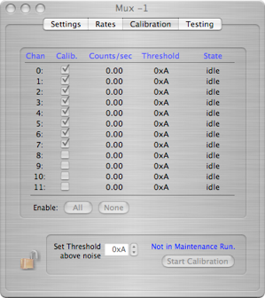
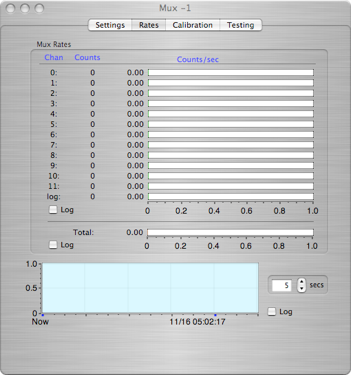
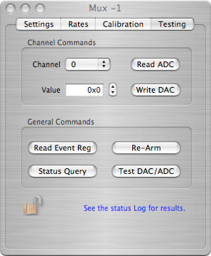
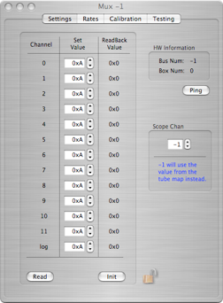
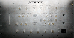

Mux Box






The Mux Box must be connected to a Mux Controller.

Displays total box rate after sampling for time set below (scale can be linear or log)
Displays rates for each channel after sampling for time set below and total counts on channel since start of run (scale can be linear or log)
Provides bus and box number and ‘ping’ to check communication
Set which scope channel receives the log amp out of this box
Channel threshold set value in hex (1 unit = 0.166 mV)
Read the channel threshold values and initialize hardware. Values do NOT take effect until hardware is initialized.
Set integration time for all rates in this window
Plots total event rate for box over long period of time. Rate scale can be linear or log.
Enables channel for auto threshold calibration. Displays the current channel rate, threshold and state (i.e. idle, integrating, tweaking, finished, and final value compared to previous). Can enable all channels, none, or select individually.
Set hex units above noise that threshold sell be set to and starts/stops this task. Task can only be performed while running in a maintenance run.
Channel test functions: reads threshold, writes specific threshold value for channel selected
Box-level test functions: reads event register, rearms box, checks box address, and reads and writes a series of thresholds to test all channels